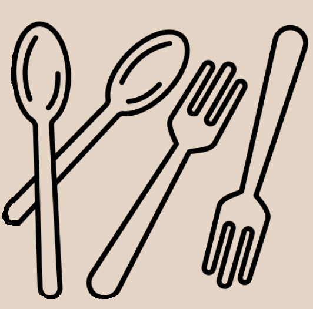

<footer
  class="bottom-0 left-0 right-0 fixed w-full items-center justify-between py-2 text-neutral-500 shadow-lg hover:text-neutral-700 focus:text-neutral-700 bg-fundo lg:py-4">
  <div class="flex w-full items-center justify-between px-3">
    
    <div class="ml-1 text-xl text-neutral-800 to-black">CookEase®</div>
  </div>
</footer>